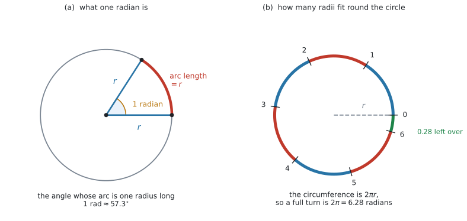
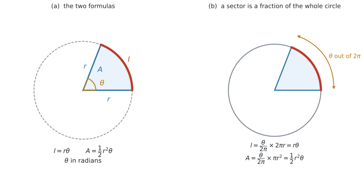

AHL 3.7 — Radian measure（弧度法）
- radian（ラジアン）が「半径と同じ長さの弧の中心角」であることを説明できる。
- \(180^{\circ} = \pi\) radians を使って、度とラジアンを両方向に換算できる。
- よく出る角を、\(\pi\) の分数の形でも小数でも書ける。
- \(l = r\theta\) で弧の長さを、\(A = \dfrac{1}{2}r^{2}\theta\) で扇形の面積を求められる。
- 度数法の式とラジアンの式を、正しく使い分けられる。
- \(l\) や \(A\) から、\(\theta\) や \(r\) を逆に求められる。
\(2\) 行あります。
\[ l = r\theta \quad (\text{arc length}), \qquad A = \frac{1}{2}r^{2}\theta \quad (\text{area of a sector}) \tag{1}\]
どちらにも、次の断り書きが添えてあります。
where \(r\) is the radius, \(\theta\) is the angle measured in radians
式は配られるので、覚える必要はありません。 ただし、この断り書きの in radians を読み飛ばすと、答えが丸ごとずれます（Common errors）。
いっぽう、度とラジアンの換算は印刷されていません。
\[ 180^{\circ} = \pi \text{ radians} \tag{2}\]
この \(1\) 行だけは、自分で持っておく必要があります（第3節）。
度数法の式のほうも、SL 3.4 の欄に印刷されています。\(2\) 組が並んで載っているので、どちらを使うかを自分で決めることになります（第7節）。
The idea
1. radian は「半径と同じ長さの弧」の中心角です
角の大きさを測るのに、\(360\) という数を使う理由は、実はありません。円を \(360\) 等分するのは、ただの約束事です（Connections 欄の why are there 360 degrees in a complete turn? は、まさにその問いです）。
radian（ラジアン）は、約束事を使わない測り方です。

図 1 の (a) を見てください。半径 \(r\) の円で、長さがちょうど \(r\) の弧を取ります。その弧の、中心に対する角が \(1\) radian です。
\[ 1 \text{ radian} = \text{円の半径に等しい長さの弧の、中心に対する角度} \]
円の大きさによりません。 半径 \(1\) cm の円でも \(100\) m の円でも、「弧の長さ＝半径」となる角は同じ大きさです。長さの比で決めているからです。
数で言うと、\(1\) radian は約 \(57.3^{\circ}\) です（第3節）。
2. だから、一周は \(2\pi\) radians です
図 1 の (b) が、その理由です。
円周の長さは \(2\pi r\) です（SL 3.4 の Prior learning）。そこに、長さ \(r\) の弧が何個入るでしょうか。
\[ \frac{2\pi r}{r} = 2\pi = 6.283\ldots \]
\(6\) 個と、\(0.28\) 個ぶんです。 図の (b) では、\(0\) から \(6\) まで目盛りを打ったあと、少しだけ余っています。
つまり
\[ \text{一周} = 2\pi \text{ radians} = 360^{\circ} \tag{3}\]
\(2\pi\) という数は、円周の公式から出てきただけです。覚えるというより、\(\dfrac{2\pi r}{r}\) を思い出せば作れます。
3. \(180^{\circ} = \pi\) radians で換算します
式 3 の両辺を \(2\) で割ると、いちばん使いやすい形になります。式 2 です。
\[ 180^{\circ} = \pi \text{ radians} \]
ここから、両方向の換算が出ます。
| したいこと | かけるもの |
|---|---|
| 度 → ラジアン | \(\dfrac{\pi}{180}\) |
| ラジアン → 度 | \(\dfrac{180}{\pi}\) |
たとえば \(60^{\circ}\) なら
\[ 60 \times \frac{\pi}{180} = \frac{60\pi}{180} = \frac{\pi}{3} = 1.047\ldots \]
逆に \(2\) radians なら
\[ 2 \times \frac{180}{\pi} = \frac{360}{\pi} = 114.59\ldots^{\circ} \]
ラジアンのほうが数が小さくなります。\(360\) 度ぶんが \(6.28\) にしかならないからです。
- 度 → ラジアン … 数が小さくなるはず。\(\dfrac{\pi}{180} \approx 0.0175\) をかけます
- ラジアン → 度 … 数が大きくなるはず。\(\dfrac{180}{\pi} \approx 57.3\) をかけます
\(60^{\circ}\) が \(1.05\) になれば向きは合っています。\(3438\) になったら、逆をかけています。
4. よく出る角の変換表
シラバスの Guidance 欄が exact multiples of と decimals を並べて挙げているとおり、どちらの形でも構いません。
| 度 | ラジアン（\(\pi\) の形） | 小数（\(4\) s.f.） |
|---|---|---|
| \(30^{\circ}\) | \(\dfrac{\pi}{6}\) | \(0.5236\) |
| \(45^{\circ}\) | \(\dfrac{\pi}{4}\) | \(0.7854\) |
| \(60^{\circ}\) | \(\dfrac{\pi}{3}\) | \(1.047\) |
| \(90^{\circ}\) | \(\dfrac{\pi}{2}\) | \(1.571\) |
| \(120^{\circ}\) | \(\dfrac{2\pi}{3}\) | \(2.094\) |
| \(180^{\circ}\) | \(\pi\) | \(3.142\) |
| \(270^{\circ}\) | \(\dfrac{3\pi}{2}\) | \(4.712\) |
| \(360^{\circ}\) | \(2\pi\) | \(6.283\) |
表 2 を丸暗記する必要はありません。 \(\dfrac{\pi}{180}\) をかければ、その場で出せます。ただし \(\dfrac{\pi}{6}\)、\(\dfrac{\pi}{4}\)、\(\dfrac{\pi}{3}\)、\(\dfrac{\pi}{2}\)、\(\pi\) の \(5\) つは何度も出てくるので、見ただけで度が浮かぶようにしておくと速くなります。
使い分けの目安は、次のとおりです。
- \(\pi\) の分数で答える … 角そのものを聞かれたとき（
Give your answer in terms of πと書いてあることもあります） - 小数で答える … 弧の長さや面積を計算するとき。どうせ電卓に入れるからです
5. 弧の長さは \(l = r\theta\) です
公式集の \(2\) 行（式 1）の \(1\) 行目です。
\[ l = r\theta \qquad (\theta \text{ はラジアン}) \tag{4}\]

図 2 の (a) が、記号の意味です。
この式が短いのが、ラジアンを使う最大の理由です。度数法では
\[ l = \frac{\theta}{360} \times 2\pi r \]
と、\(360\) と \(2\pi\) を両方引きずらなければなりません（SL 3.4）。
たとえば \(r = 9\) cm、\(\theta = 1.2\) radians なら
\[ l = 9 \times 1.2 = 10.8 \text{ cm} \]
かけ算 \(1\) 回です。
6. 扇形の面積は \(A = \dfrac{1}{2}r^{2}\theta\) です
\[ A = \frac{1}{2}r^{2}\theta \qquad (\theta \text{ はラジアン}) \tag{5}\]
同じ \(r = 9\) cm、\(\theta = 1.2\) radians で
\[ A = \frac{1}{2} \times 81 \times 1.2 = 48.6 \text{ cm}^{2} \]
\(r^{2}\theta\) だけで止めると、答えが \(2\) 倍になります。
三角形の面積 \(\dfrac{1}{2}bh\) と同じ \(\dfrac{1}{2}\) だと思っておくと、忘れにくくなります。実際、\(\theta\) が小さいとき、扇形は底辺 \(l = r\theta\)、高さ \(r\) の三角形にとても近い形です。
\[ \frac{1}{2} \times \underbrace{r\theta}_{\text{底辺}} \times \underbrace{r}_{\text{高さ}} = \frac{1}{2}r^{2}\theta \]
これは覚え方であって、証明ではありません。 きちんとした理由は Why it works にあります。
7. 度数法の式と、どちらを使うか
公式集には\(2\) 組の式が載っています。
| \(\theta\) の単位 | 弧の長さ | 扇形の面積 | どこ |
|---|---|---|---|
| 度 | \(\dfrac{\theta}{360} \times 2\pi r\) | \(\dfrac{\theta}{360} \times \pi r^{2}\) | 公式集の 3.4 |
| ラジアン | \(r\theta\) | \(\dfrac{1}{2}r^{2}\theta\) | 公式集の 3.7 |
選び方は \(1\) つです。\(\theta\) が何で書かれているかを見ます。
- \(50^{\circ}\) のように度の記号がある → 度の式を使う。または \(\dfrac{\pi}{180}\) をかけてラジアンに直す
- \(1.2\) のように記号がない → ラジアン。ラジアンの式を使う
Why it works
なぜ \(l = r\theta\) と \(A = \dfrac{1}{2}r^{2}\theta\) になるのか。 どちらも「円全体の何割か」という \(1\) つの考え方から出ます。
図 2 の (b) を見てください。一周は \(2\pi\) radians でした（式 3）。ですから、角 \(\theta\) の扇形は、円全体の
\[ \frac{\theta}{2\pi} \]
の割合を占めています。
弧の長さは、円周 \(2\pi r\) のその割合です。
\[ l = \frac{\theta}{2\pi} \times 2\pi r = r\theta \]
\(2\pi\) が約分で消えます。 これが式の短さの正体です。
面積は、円の面積 \(\pi r^{2}\) のその割合です。
\[ A = \frac{\theta}{2\pi} \times \pi r^{2} = \frac{r^{2}\theta}{2} = \frac{1}{2}r^{2}\theta \]
こちらでは \(\pi\) だけが約分され、\(2\) が残ります。 これが \(\dfrac{1}{2}\) の出どころです。
度数法でも、まったく同じ議論です。 一周が \(360\) なので、割合は \(\dfrac{\theta}{360}\)。
\[ l = \frac{\theta}{360} \times 2\pi r, \qquad A = \frac{\theta}{360} \times \pi r^{2} \]
\(360\) と \(2\pi\) が約分できないので、式が長いまま残ります。
「一周をいくつと数えるか」を \(2\pi\) にしておくと、円周の \(2\pi\) と打ち消し合う——ラジアンの利点は、ここに尽きます。同じ理由で、AHL 5.9a の \(\dfrac{d}{dx}\sin x = \cos x\) も、ラジアンのときだけ余分な係数が付きません。
Worked examples
問題文は英語です。意味が理解できなかったら、問題文の下の「日本語訳」を開いてください。解説は日本語です。
例題 1 (a) Convert \(144^{\circ}\) to radians, giving your answer as an exact multiple of \(\pi\).
(b) Convert \(2.4\) radians to degrees, correct to \(1\) decimal place.
(c) Find, correct to \(1\) decimal place, the size of an angle of \(1\) radian in degrees.
日本語訳
(a) \(144^{\circ}\) をラジアンに直しなさい。答えは \(\pi\) の正確な倍数の形で書きなさい。
(b) \(2.4\) ラジアンを度に直しなさい。小数第 \(1\) 位まで答えなさい。
(c) \(1\) ラジアンの角の大きさを度で求めなさい。小数第 \(1\) 位まで答えなさい。
(a) 度 → ラジアンなので、\(\dfrac{\pi}{180}\) をかけます（表 1）。
\[ 144 \times \frac{\pi}{180} = \frac{144\pi}{180} \]
約分します。\(144\) と \(180\) の最大公約数は \(36\) です。
\[ \frac{144\pi}{180} = \frac{4\pi}{5} \]
exact multiple of π と言われているので、ここで止めます。 小数にしないでください。
検算。 \(\dfrac{4\pi}{5} = 2.513\ldots\) で、\(\pi = 3.14\) より少し小さい値です。\(144^{\circ}\) は \(180^{\circ}\) より少し小さいので、つじつまが合っています ✓
(b) ラジアン → 度なので、\(\dfrac{180}{\pi}\) をかけます。
\[ 2.4 \times \frac{180}{\pi} = \frac{432}{\pi} = 137.509\ldots = 137.5^{\circ} \]
検算。 \(2.4\) は \(\dfrac{\pi}{2} = 1.57\) より大きく \(\pi = 3.14\) より小さいので、\(90^{\circ}\) と \(180^{\circ}\) のあいだのはずです。\(137.5\) ✓
(c) 同じ式に \(1\) を入れます。
\[ 1 \times \frac{180}{\pi} = 57.295\ldots = 57.3^{\circ} \]
図 1 の (a) の角です。この \(57.3\) という数は、覚えておくと見当を付けるのに使えます。
(a) \[144 \times \frac{\pi}{180} = \frac{4\pi}{5}\]
(b) \[2.4 \times \frac{180}{\pi} = 137.5^{\circ}\]
(c) \[\frac{180}{\pi} = 57.3^{\circ}\]
例題 2 A sector of a circle has radius \(9\) cm and angle \(1.2\) radians at the centre.
(a) Find the length of the arc.
(b) Find the area of the sector.
(c) Find the perimeter of the sector.
日本語訳
ある扇形の半径は \(9\) cm、中心角は \(1.2\) ラジアンです。
(a) 弧の長さを求めなさい。
(b) 扇形の面積を求めなさい。
(c) 扇形の周の長さを求めなさい。
\(1.2\) には度の記号が付いていないので、ラジアンです（第7節）。
(a) 式 4 です。
\[ l = r\theta = 9 \times 1.2 = 10.8 \text{ cm} \]
(b) 式 5 です。
\[ A = \frac{1}{2}r^{2}\theta = \frac{1}{2} \times 9^{2} \times 1.2 = \frac{1}{2} \times 81 \times 1.2 = 48.6 \text{ cm}^{2} \]
\(r\) を先に \(2\) 乗してください。 \(\left(\dfrac{1}{2} \times 9\right)^{2} \times 1.2\) ではありません。
(c) 周には、弧のほかに半径が \(2\) 本入ります（式 6）。
\[ \text{perimeter} = 10.8 + 2 \times 9 = 10.8 + 18 = 28.8 \text{ cm} \]
検算。 円全体と比べます。\(1.2\) radians は一周 \(6.283\) の約 \(19\%\) です。
\[ \text{円周} = 2\pi(9) = 56.5, \qquad 56.5 \times 0.191 = 10.8 \ ✓ \]
\[ \text{円の面積} = \pi(81) = 254.5, \qquad 254.5 \times 0.191 = 48.6 \ ✓ \]
(a) \[l = r\theta = 9(1.2) = 10.8 \text{ cm}\]
(b) \[A = \frac{1}{2}r^{2}\theta = \frac{1}{2}(81)(1.2) = 48.6 \text{ cm}^{2}\]
(c) \[\text{perimeter} = 10.8 + 2(9) = 28.8 \text{ cm}\]
例題 3 An arc of length \(15\) cm lies on a circle of radius \(6\) cm.
(a) Find the angle subtended at the centre, in radians.
(b) Give this angle in degrees, correct to \(1\) decimal place.
(c) Find the area of the corresponding sector.
日本語訳
半径 \(6\) cm の円の上に、長さ \(15\) cm の弧があります。
(a) 中心に対する角をラジアンで求めなさい。
(b) この角を度で、小数第 \(1\) 位まで答えなさい。
(c) 対応する扇形の面積を求めなさい。
(a) 式 4 を \(\theta\) について解きます。
\[ \theta = \frac{l}{r} = \frac{15}{6} = 2.5 \text{ radians} \]
この形が、radian の定義そのものです（第1節）。弧が半径の \(2.5\) 倍あるので、角は \(2.5\) radians です。
(b) \(\dfrac{180}{\pi}\) をかけます。
\[ 2.5 \times \frac{180}{\pi} = 143.239\ldots = 143.2^{\circ} \]
(c) ここで \(2.5\) を使います。\(143.2\) ではありません。
\[ A = \frac{1}{2} \times 6^{2} \times 2.5 = \frac{1}{2} \times 36 \times 2.5 = 45 \text{ cm}^{2} \]
検算。 もう \(1\) つの式でも出します。\(\dfrac{1}{2}lr = \dfrac{1}{2}(15)(6) = 45\) ✓
（\(A = \dfrac{1}{2}r^{2}\theta = \dfrac{1}{2}r(r\theta) = \dfrac{1}{2}lr\) なので、\(l\) が分かっているときはこちらが速いことがあります。）
- で \(\dfrac{1}{2}(36)(143.2)\) としてしまうと、\(2577.6\) という値が出ます。
円全体の面積は \(\pi(36) = 113\) cm² しかありません。 扇形がそれより大きくなることはありえないので、この時点で気づけます（演習 \(10\)）。
(a) \[\theta = \frac{l}{r} = \frac{15}{6} = 2.5 \text{ radians}\]
(b) \[2.5 \times \frac{180}{\pi} = 143.2^{\circ}\]
(c) \[A = \frac{1}{2}(6)^{2}(2.5) = 45 \text{ cm}^{2}\]
例題 4 A garden sprinkler waters a sector of a circle. The sprinkler throws water a distance of \(8\) m and turns through an angle of \(2.1\) radians.
(a) Find the area of ground that is watered.
(b) Find the distance travelled by the tip of the jet of water as the sprinkler turns once through this angle.
(c) The gardener says that doubling the distance the water is thrown would double the area watered. Comment on this statement.
日本語訳
庭のスプリンクラーが、円の扇形の部分に水をまきます。水は \(8\) m 先まで届き、スプリンクラーは \(2.1\) ラジアンの角だけ回ります。
(a) 水がまかれる地面の面積を求めなさい。
(b) スプリンクラーがこの角を \(1\) 回まわるあいだに、水の先端が動く距離を求めなさい。
(c) 庭師は「水の届く距離を \(2\) 倍にすれば、まかれる面積も \(2\) 倍になる」と言っています。この発言についてコメントしなさい。
(a) 半径 \(8\) m、角 \(2.1\) radians の扇形です。
\[ A = \frac{1}{2} \times 8^{2} \times 2.1 = \frac{1}{2} \times 64 \times 2.1 = 67.2 \text{ m}^{2} \]
(b) 先端が動くのは、半径 \(8\) m の弧です。
\[ l = 8 \times 2.1 = 16.8 \text{ m} \]
(c) Comment on なので、言葉で答えます。 まず計算して確かめます。
半径を \(16\) m にすると
\[ A = \frac{1}{2} \times 16^{2} \times 2.1 = \frac{1}{2} \times 256 \times 2.1 = 268.8 \text{ m}^{2} \]
\[ \frac{268.8}{67.2} = 4 \]
\(2\) 倍ではなく \(4\) 倍です。\(A = \dfrac{1}{2}r^{2}\theta\) の \(r\) が \(2\) 乗されているからです。
試験ではこう書く
The statement is not correct. In \(A = \frac{1}{2}r^{2}\theta\) the radius is squared, so doubling \(r\) from \(8\) m to \(16\) m multiplies the area by \(2^{2} = 4\), from \(67.2\) m\(^{2}\) to \(268.8\) m\(^{2}\). The area would be four times as large, not twice as large. Doubling the angle instead would double the area, because \(A\) is proportional to \(\theta\).
（この発言は正しくない。\(A = \frac12 r^2\theta\) では半径が \(2\) 乗されているので、\(r\) を \(8\) m から \(16\) m に \(2\) 倍すると面積は \(2^2 = 4\) 倍になり、\(67.2\) m² から \(268.8\) m² になる。面積は \(2\) 倍ではなく \(4\) 倍である。かわりに角を \(2\) 倍にすれば面積は \(2\) 倍になる。\(A\) は \(\theta\) に比例するからである、という意味です。）
(a) \[A = \frac{1}{2}(8)^{2}(2.1) = 67.2 \text{ m}^{2}\]
(b) \[l = 8(2.1) = 16.8 \text{ m}\]
(c) Not correct. Since \(A = \frac{1}{2}r^{2}\theta\) has \(r\) squared, doubling \(r\) multiplies the area by \(4\): \(\frac{1}{2}(16)^{2}(2.1) = 268.8\) m\(^{2}\), which is \(4 \times 67.2\). Doubling the angle would double the area.
Common errors
\(\theta = 50^{\circ}\)、\(r = 6\) cm で
\[ A = \frac{1}{2}(36)(50) = 900 \text{ cm}^{2} \]
としてしまう誤りです。円全体でも \(\pi(36) = 113\) cm² しかありません。
先に \(50 \times \dfrac{\pi}{180} = 0.8727\) に直してから使ってください（演習 \(10\)）。
答えが円全体を超えていないかを見るのが、いちばん速い検算です。
どちらをかけるか迷ったら、大きさで確かめてください（第3節）。
- 度 → ラジアン … 数は小さくなる
- ラジアン → 度 … 数は大きくなる
\(45^{\circ}\) が \(0.785\) になれば正しく、\(2578\) になったら逆です。
\(A = r^{2}\theta\) と書いてしまうと、答えがちょうど \(2\) 倍になります。
公式集には \(\dfrac{1}{2}r^{2}\theta\) と印刷されています。写すときに落とさないでください（第6節）。
perimeter を聞かれて、弧の長さだけを答える誤りです。扇形の周（perimeter）には、弧のほかに半径が \(2\) 本入ります。
\[ \text{perimeter} = l + 2r = r\theta + 2r \tag{6}\]
扇形はピザの \(1\) 切れの形です。まわりを \(1\) 周すると、丸い部分と、まっすぐな辺が \(2\) 本あります（SL 3.4 と同じ考え方です）。
\(\dfrac{1}{2} \times 9^{2}\) は \(40.5\) ですが、\(\left(\dfrac{1}{2} \times 9\right)^{2} = 20.25\) です。\(2\) 乗が先です。
電卓に入れるときも、0.5*9^2*1.2 の順で打てば取り違えません。(0.5*9)^2 としないでください。
Using your GDC (TI-Nspire CX II)
1. 角の設定を、いちばん先に確かめます
doc → Settings → Document SettingsAngle を Radian にします。HL の試験では、断りがなければラジアンでした（第7節）。
\(l = r\theta\) と \(A = \dfrac{1}{2}r^{2}\theta\) は、ただのかけ算なので設定の影響を受けません。 影響が出るのは、\(\sin\)、\(\cos\)、\(\tan\) を使うときです。扇形の問題でも、弓形の面積や三角形の面積を出す段になると効いてきます（SL 3.4）。
設定が違っていると、もっともらしい数が出るのに全部ずれます。 毎回確かめる価値があります。
2. \(\pi\) はキーで入れます
\(\pi\) は専用のキーがあります。3.14 と打たないでください。 桁が足りず、あとの計算に誤差が乗ります。
\(144 \times \dfrac{\pi}{180}\)
と打つと、\(\dfrac{4\pi}{5}\) の小数、つまり \(2.51327\) が返ります（かけ算と割り算だけなので、Radian か Degree かの設定には左右されません）。
TI-Nspire CX II は Numeric です。\(\dfrac{4\pi}{5}\) のような記号のままの答えは返ってきません。 小数の \(2.51327\ldots\) が出ます。
exact multiple of π と問われたら、約分は自分でやります（例 1）。\(\dfrac{144}{180}\) を約分して \(\dfrac{4}{5}\)、それに \(\pi\) を付ける——手でやるほうが速い作業です。
出した答えの検算には電卓が使えます。\(\dfrac{4\pi}{5}\) と \(144 \times \dfrac{\pi}{180}\) の小数が一致するかを見てください。
3. 度とラジアンが混ざるとき
Radian 設定のまま度の値を使いたいときは、式の中に度の記号を入れます。
sin(50°)度の記号は、キーボードのいちばん下、左端の π のキーを押すと開く記号パレットから選びます。設定を切りかえるより、こちらのほうが安全です（AHL 5.9a と同じやり方です）。
逆に、Degree 設定のままラジアンを使いたいときは、パレットの上付き r を付けます。ただし、HL では Radian にしておくほうが混乱しません。
4. 弧と扇形の計算
式が短いので、そのまま \(1\) 行で打てます。
- \(9 \times 1.2\)
- \(0.5 \times 9^{2} \times 1.2\)
\(10.8\) と \(48.6\) が返ります。\(2\) 乗を先に計算させるため、0.5*9^2 の順で打ってください（Common errors の \(5\) つ目）。
度の値から始めるときは、換算を式の中に入れてしまうのが確実です。
\(0.5 \times 6^{2} \times \left(50 \times \dfrac{\pi}{180}\right)\)
\(15.708\) が返ります。途中で丸めた \(0.87\) を使わないですみます。
5. 検算のしかた
- 円全体と比べる。 扇形の面積が \(\pi r^{2}\) を超えていたら、必ず間違いです
- 割合で確かめる。 \(\theta\) が一周 \(2\pi\) の何割かを出し、円周・円の面積にその割合をかける（例 2）
- \(A\) を出したら、\(\dfrac{1}{2}lr\) でも計算して突き合わせる（例 3）
- 換算したら、大きさの向きを見る。度 → ラジアンで数が大きくなっていたら、逆をかけています
\(1\) つ目が、いちばん強い検算です。円より大きい扇形はありません。
Exercises
各問題に、折りたたみが3つ付いています。日本語訳、解答例（答案用紙に書くべきこと。英語です）、解説（なぜそうなるか。日本語です）。
まず自分で解いて、次に解答例と見くらべてください。解説は、合わなかったときだけ開けば十分です。
1 Convert \(75^{\circ}\) to radians, giving your answer as an exact multiple of \(\pi\) and also correct to \(3\) significant figures.
日本語訳
\(75^{\circ}\) をラジアンに直しなさい。答えを \(\pi\) の正確な倍数の形と、有効数字 \(3\) 桁の両方で書きなさい。
\[75 \times \frac{\pi}{180} = \frac{75\pi}{180} = \frac{5\pi}{12}\]
\[\frac{5\pi}{12} = 1.31 \text{ radians}\]
\(75\) と \(180\) の最大公約数は \(15\) です。\(\dfrac{75}{15} = 5\)、\(\dfrac{180}{15} = 12\)。
\(\dfrac{5\pi}{12} = 1.30899\ldots\) なので、\(3\) s.f. で \(1.31\) です。
検算。 \(75^{\circ}\) は \(90^{\circ} = \dfrac{\pi}{2} = 1.571\) より少し小さいはずです。\(1.31 < 1.571\) ✓ また \(60^{\circ} = 1.047\) より大きいはずです。\(1.31 > 1.047\) ✓
2 Convert \(3.7\) radians to degrees, correct to the nearest degree.
日本語訳
\(3.7\) ラジアンを度に直しなさい。答えは最も近い整数の度で書きなさい。
\[3.7 \times \frac{180}{\pi} = 211.994\ldots = 212^{\circ}\]
ラジアン → 度なので \(\dfrac{180}{\pi}\) をかけます（表 1）。
検算。 \(3.7\) は \(\pi = 3.142\)（\(180^{\circ}\)）より少し大きく、\(\dfrac{3\pi}{2} = 4.712\)（\(270^{\circ}\)）より小さいので、答えは \(180\) と \(270\) のあいだのはずです。\(212\) ✓
\(57.3\) を \(3.7\) 倍しても \(212\) になります（\(57.3 \times 3.7 = 212.0\)）。\(1\) radian \(\approx 57.3^{\circ}\) を覚えておくと、暗算で見当が付きます。
3 A sector has radius \(14\) cm and angle \(0.85\) radians. Find the length of the arc and the area of the sector.
日本語訳
ある扇形の半径は \(14\) cm、角は \(0.85\) ラジアンです。弧の長さと扇形の面積を求めなさい。
\[l = r\theta = 14(0.85) = 11.9 \text{ cm}\]
\[A = \frac{1}{2}r^{2}\theta = \frac{1}{2}(196)(0.85) = 83.3 \text{ cm}^{2}\]
度の記号が付いていないので、ラジアンです（第7節）。
\(14^{2} = 196\) を先に出してから、\(\dfrac{1}{2}\) と \(0.85\) をかけます。
検算。 \(\dfrac{1}{2}lr = \dfrac{1}{2}(11.9)(14) = 83.3\) ✓ ただし、ここの \(l\) は自分で \(r\theta\) として出したものです。\(\dfrac{1}{2}(r\theta)r\) は \(\dfrac{1}{2}r^{2}\theta\) を書き直しただけなので、この検算で見つかるのは \(\dfrac{1}{2}\) の落としや打ち間違いです。\(r\) や \(\theta\) の読み違いは見つかりません（\(l\) が問題文で与えられている 例 3 では、こちらは本当に別の道になります）。
円全体の面積は \(\pi(196) = 615.8\) cm² なので、\(83.3\) はその \(13.5\%\)。\(\dfrac{0.85}{2\pi} = 13.5\%\) ✓
4 An arc of length \(24\) cm subtends an angle of \(1.6\) radians at the centre of a circle. Find the radius of the circle.
日本語訳
長さ \(24\) cm の弧が、円の中心に \(1.6\) ラジアンの角を張ります。この円の半径を求めなさい。
\[l = r\theta \ \Rightarrow \ 24 = r(1.6)\]
\[r = \frac{24}{1.6} = 15 \text{ cm}\]
式 4 を \(r\) について解きます。
検算。 \(15 \times 1.6 = 24\) ✓ もとに戻りました。
\(\theta = 1.6\) は \(1\) より大きいので、弧は半径より長いはずです。\(24 > 15\) ✓ 向きも合っています。
5 A sector of a circle of radius \(10\) cm has area \(50\) cm\(^{2}\). Find the angle of the sector in radians.
日本語訳
半径 \(10\) cm の円の扇形の面積が \(50\) cm² です。この扇形の角をラジアンで求めなさい。
\[A = \frac{1}{2}r^{2}\theta \ \Rightarrow \ 50 = \frac{1}{2}(100)\theta = 50\theta\]
\[\theta = 1 \text{ radian}\]
\(\dfrac{1}{2}(100) = 50\) なので、式が \(50 = 50\theta\) になります。
\(\theta = 1\) radian ということは、弧の長さがちょうど半径の \(10\) cm だということです（第1節）。
検算。 \(l = 10 \times 1 = 10\) cm。\(\dfrac{1}{2}lr = \dfrac{1}{2}(10)(10) = 50\) ✓
6 Find the perimeter of a sector of radius \(7\) cm with angle \(1.5\) radians.
日本語訳
半径 \(7\) cm、角 \(1.5\) ラジアンの扇形の周の長さを求めなさい。
\[l = 7(1.5) = 10.5 \text{ cm}\]
\[\text{perimeter} = l + 2r = 10.5 + 14 = 24.5 \text{ cm}\]
弧だけで止めないでください（Common errors の \(4\) つ目）。半径が \(2\) 本入ります。
\[\text{perimeter} = r\theta + 2r\]
検算。 \(\theta = 1.5\) は \(2\) より小さいので、弧 \(r\theta\) は \(2r = 14\) より短いはずです。\(10.5 < 14\) ✓ そして周は、その弧に \(14\) を足したものですから、\(14\) より大きくなるはずです。\(24.5 > 14\) ✓ 弧だけで止めた \(10.5\) は、この \(2\) つ目で落ちます。
\(\theta = 2\) radians なら、弧と \(2\) 本の半径がちょうど同じ長さになります。おもしろい目安です。
7 A sector has radius \(12\) cm and angle \(40^{\circ}\). By first converting the angle to radians, find the area of the sector.
日本語訳
ある扇形の半径は \(12\) cm、角は \(40^{\circ}\) です。まず角をラジアンに直してから、扇形の面積を求めなさい。
\[40 \times \frac{\pi}{180} = \frac{2\pi}{9} = 0.698131\ldots\]
\[A = \frac{1}{2}(144)(0.698131\ldots) = 50.3 \text{ cm}^{2}\]
8 Explain why the formula \(l = r\theta\) can only be used when \(\theta\) is measured in radians.
日本語訳
公式 \(l = r\theta\) が、\(\theta\) をラジアンで測ったときにしか使えない理由を説明しなさい。
A sector of angle \(\theta\) is the fraction \(\dfrac{\theta}{2\pi}\) of a full circle when \(\theta\) is in radians, so its arc is
\[l = \frac{\theta}{2\pi} \times 2\pi r = r\theta\]
The \(2\pi\) cancels only because a full turn is \(2\pi\) radians. If \(\theta\) were in degrees, the fraction would be \(\dfrac{\theta}{360}\) and the arc would be \(\dfrac{\theta}{360} \times 2\pi r\), which is not \(r\theta\).
Explain why なので、英語で理由を書きます。
言うべきことは、「\(2\pi\) が約分で消えるのは、一周が \(2\pi\) radians のときだけ」という \(1\) 点です（Why it works）。
数で示すのも有効です。 \(r = 10\)、\(\theta = 90^{\circ}\) で試すと、正しい弧は
\[\frac{90}{360} \times 2\pi(10) = 15.7\]
ですが、\(r\theta = 10 \times 90 = 900\) です。円周の \(62.8\) より大きいので、これが弧の長さでないことは、値を見ただけで分かります。
試験ではこう書く
The sector is the fraction \(\dfrac{\theta}{2\pi}\) of the whole circle only when \(\theta\) is in radians, since a full turn is \(2\pi\) radians. Then \(l = \dfrac{\theta}{2\pi} \times 2\pi r = r\theta\), the \(2\pi\) cancelling. In degrees a full turn is \(360\), so the fraction is \(\dfrac{\theta}{360}\) and \(l = \dfrac{\theta}{360} \times 2\pi r\), which is not \(r\theta\). For example, with \(r = 10\) and \(\theta = 90^{\circ}\) the true arc is \(15.7\), while \(r\theta\) would give \(900\), longer than the whole circumference.
9 A pendulum has a string of length \(0.75\) m. The string swings through an angle of \(0.3\) radians, from one side to the other.
(a) Find the distance travelled by the bob in one swing.
(b) Interpret what happens to this distance if the string is made twice as long, with the same angle.
日本語訳
ある振り子のひもの長さは \(0.75\) m です。ひもは、片側からもう片側まで \(0.3\) ラジアンの角だけ振れます。
(a) \(1\) 振りで振り子のおもりが動く距離を求めなさい。
(b) 同じ角のまま、ひもの長さを \(2\) 倍にしたとき、この距離がどうなるかを解釈しなさい。
(a) \[l = r\theta = 0.75(0.3) = 0.225 \text{ m}\]
(b) The distance is directly proportional to the length of the string, since \(l = r\theta\) with \(\theta\) fixed. Doubling the length to \(1.5\) m doubles the distance to \(0.45\) m.
(a) おもりが動くのは円弧です。ひもの長さが半径になります。
\(0.225\) m、つまり \(22.5\) cm です。
(b) Interpret なので、文脈の言葉で答えます。
\(l = r\theta\) で \(\theta\) が変わらないなら、\(l\) は \(r\) に比例します。\(2\) 倍なら \(2\) 倍です。
面積のときとは違います。 \(A = \dfrac{1}{2}r^{2}\theta\) では \(r\) が \(2\) 乗なので \(4\) 倍でした（例 4）。弧は \(1\) 乗、面積は \(2\) 乗——ここを混同しないでください。
試験ではこう書く
Since \(l = r\theta\) and the angle \(\theta\) stays at \(0.3\) radians, the distance travelled is directly proportional to the length of the string. Doubling the length from \(0.75\) m to \(1.5\) m therefore doubles the distance, from \(0.225\) m to \(0.45\) m. This is unlike the area of a sector, which depends on \(r^{2}\) and would be four times as large.
10 A student is asked for the area of a sector of radius \(6\) cm with angle \(50^{\circ}\), and writes
\[ A = \frac{1}{2}r^{2}\theta = \frac{1}{2}(36)(50) = 900 \text{ cm}^{2} \]
Identify the error and find the correct area.
日本語訳
ある生徒が、半径 \(6\) cm、角 \(50^{\circ}\) の扇形の面積を聞かれて、上のように書きました。誤りを指摘し、正しい面積を求めなさい。
The formula \(A = \frac{1}{2}r^{2}\theta\) requires \(\theta\) in radians, but \(50^{\circ}\) was substituted directly.
\[50 \times \frac{\pi}{180} = 0.872664\ldots \text{ radians}\]
\[A = \frac{1}{2}(36)(0.872664\ldots) = 15.7 \text{ cm}^{2}\]
Identify the error なので、どこが違うかを言葉で書きます。
\(A = \dfrac{1}{2}r^{2}\theta\) には、公式集にも次の断り書きが添えてあります。
where \(r\) is the radius, \(\theta\) is the angle measured in radians
その断りを読み飛ばしたのが誤りです。
\(900\) という答えは、それ自体がおかしいことにも気づけます。円全体の面積は
\[\pi(6)^{2} = 113 \text{ cm}^{2}\]
しかありません。扇形が円より大きくなることはありません（GDC）。
\(50^{\circ}\) は一周の \(\dfrac{50}{360} = 13.9\%\) なので、\(113 \times 0.139 = 15.7\) ✓ 正しい答えと合いました。
試験ではこう書く
The error is that \(\theta\) was left in degrees. The formula \(A = \frac{1}{2}r^{2}\theta\) is only valid when \(\theta\) is measured in radians, so \(50^{\circ}\) must first be converted: \(50 \times \frac{\pi}{180} = 0.8727\) radians. Then \(A = \frac{1}{2}(36)(0.8727) = 15.7\) cm\(^{2}\). The answer \(900\) cm\(^{2}\) is impossible in any case, since the whole circle has area only \(\pi(6)^{2} = 113\) cm\(^{2}\).
参考：シラバスの原文
Content 欄は \(2\) 行です。
The definition of a radian and conversion between degrees and radians.
Using radians to calculate area of sector, length of arc.
Guidance 欄には \(2\) つあります。
Radian measure may be expressed as exact multiples of \(\pi\), or decimals.
Link to: trigonometric functions (AHL 2.9).
\(1\) つ目が大事です。\(\dfrac{\pi}{6}\) と書いても \(0.524\) と書いても、どちらでも構いません（第4節）。
AHL の Topic 3 全体にかかる、もっと大事な \(1\) 行もあります。
On HL examination papers radian measure should be assumed unless otherwise indicated.
HL の試験では、断りがなければラジアンです。 度の記号 \(^{\circ}\) が付いていないかぎり、ラジアンだと思ってください（第7節）。AHL Topic 3 全体の Recommended teaching hours は \(28\) 時間です。
Connections 欄には \(3\) つ挙がっています。
Links to other subjects: Diffraction patterns and circular motion (physics)
International-mindedness: Seki Takakazu calculating \(\pi\) to ten decimal places; Hipparchus, Menelaus and Ptolemy; why are there 360 degrees in a complete turn? Why do we use minutes and seconds for time?; Links to Babylonian mathematics.
TOK: Which is the better measure of an angle, degrees or radians? What criteria can/do/should mathematicians use to make such judgments?
Guidance の Link to: trigonometric functions (AHL 2.9) は、AHL 2.9a の sinusoidal model のことです。あちらで period \(= \dfrac{2\pi}{b}\) を使ったのは、この項目のラジアンが前提だからです。